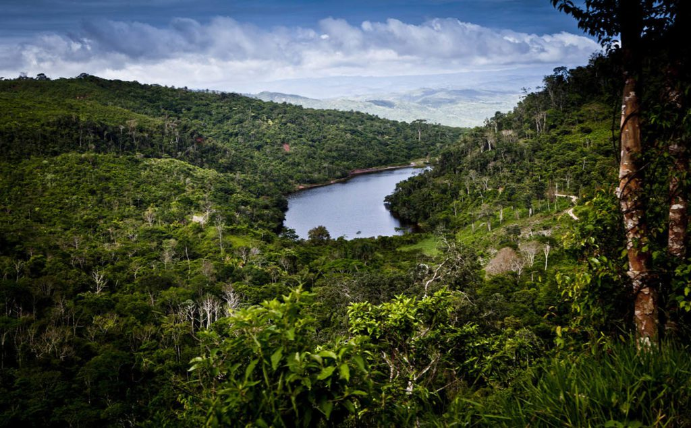
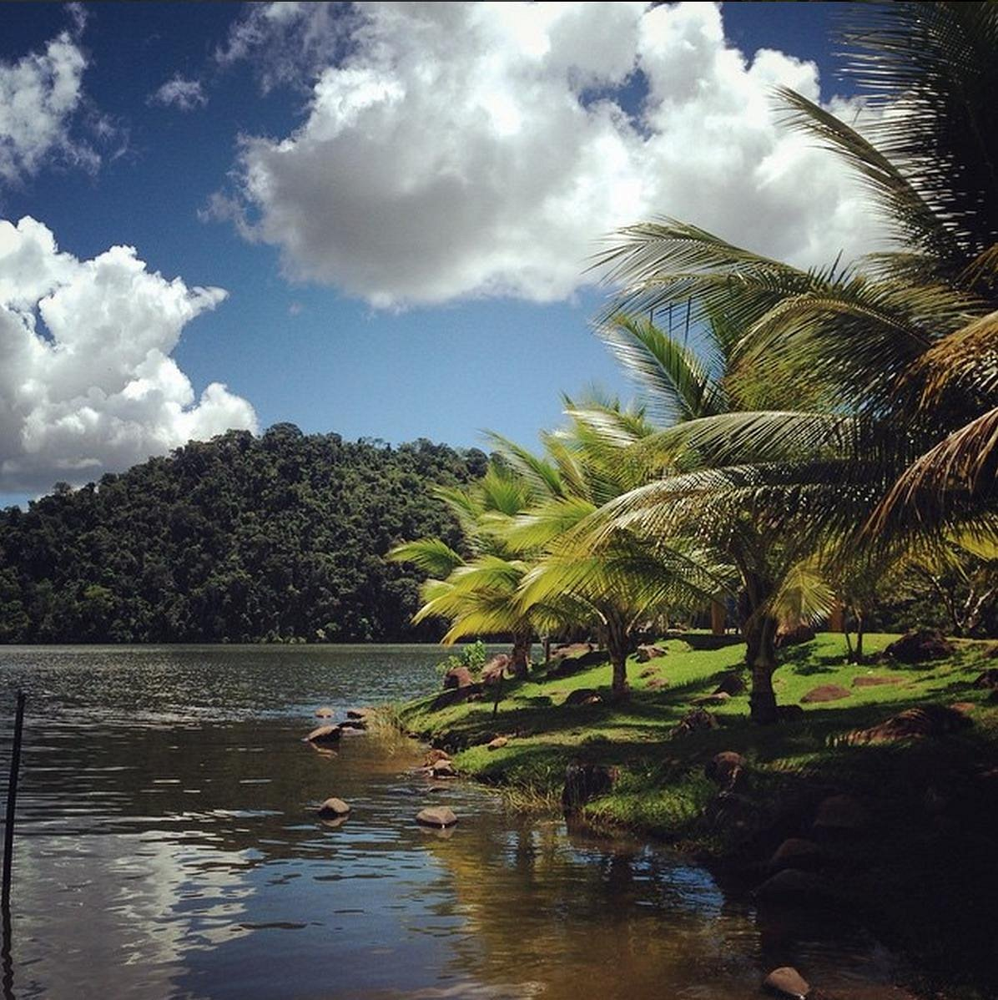
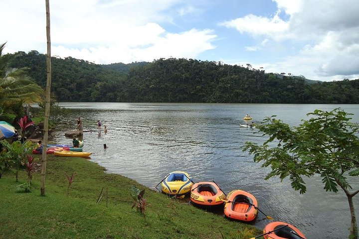

Laguna de Shanao: Un tesoro escondido en San Martín
Ubicada en la región de San Martín, la Laguna de Shanao es un destino natural ideal para quienes buscan tranquilidad y contacto con la naturaleza. Sus aguas cristalinas y el entorno selvático hacen de este lugar un refugio perfecto para la biodiversidad.
Historia
La Laguna de Shanao ha sido un punto de interés para las comunidades locales desde tiempos ancestrales. Es un sitio que ha mantenido su belleza natural a lo largo del tiempo y que sigue siendo un importante ecosistema para diversas especies de flora y fauna.



Horarios y Ubicación
- Ubicación: Shanao, región de San Martín, Perú.
- Horario de visita: De 6:00 a.m. a 5:00 p.m.
- Costo de entrada: Entrada gratuita.
Consejos para Visitantes
- Lleva ropa cómoda: Ropa ligera y de manga larga para protegerse del sol y los insectos.
- Usa protector solar y repelente: El clima puede ser cálido y húmedo, por lo que es esencial protegerse.
- Respeta el ecosistema: No contamines la laguna y sigue las indicaciones para preservar su biodiversidad.
- Explora con un guía: Para conocer más sobre la historia y la importancia ecológica del lugar.
- Lleva provisiones: No hay muchas tiendas cercanas, así que es recomendable llevar agua y algo de comida.